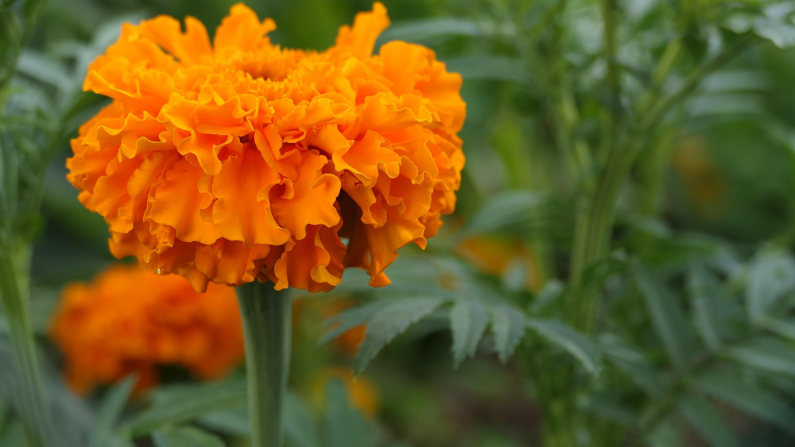
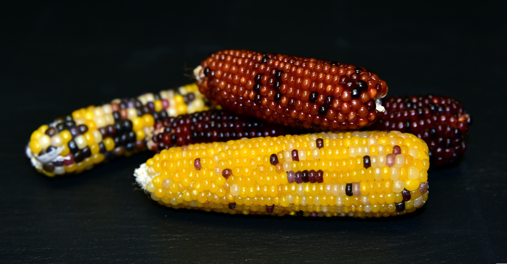

¿Qué son las plantas nativas?

Cuando pensamos en poblar nuestro jardín, quizá pensamos en aquellos ejemplares populares en cualquier medio (lavanda, jacintos, rosas) y olvidamos algo fundamental: los seres vivos en un ecosistema se adaptaron a existir en su propio ecosistema. Esto involucra una buena y una mala noticia: la mala, será complejo adaptar plantas extranjeras a nuestro entorno, la buena, existen especies que ya saben vivir en él. Que ya se adaptaton al clima, y que incluso son capaces de coexistir de forma eficiente con otras plantas y animales en la región. Estas son las plantas nativas que, en realidad, dependen de la región en la que te encuentres.
¿Por qué son importantes?

En la página del Gobierno de México, se lee: "Uno de los factores para la producción sostenible es la conservación de especies vegetales nativas, cuyo estado puede ser evaluado inicialmente a través del conocimiento tradicional". Y, en efecto, no necesitan adaptarse un ambiente en el que ya saben existir, lo que nos puede ahorrar mucha pena y dinero. Además, estas especies están relacionadas con saberes y costumbres propios de nuestra cultura. Piensa en lo importante que es el maíz nativo para la gastronomía mexicana, o en los remedios caseros de nuestras abuelas. Aprovechar estas especies es inteligente, eficiente y sostenible a largo plazo.
Pero si eres una persona interesada en el medio ambiente y la conservación, abogar por las plantas nativas te interesará profundamente, ya que la presencia de estas permite que especies de otros reinos (animales, hongos) aprovechen su presencia como alimento o un refugio para construir sus comunidades. Rescatarlas y adoptarlas en nuestros entornos significa contrubuir a la conservación de especies de las que quizá ni siquiera nos percatamos.
Un poco más abajo puedes ver algunas flores nativas del centro de México, ¿te animarías a incluirlas en tu jardín?